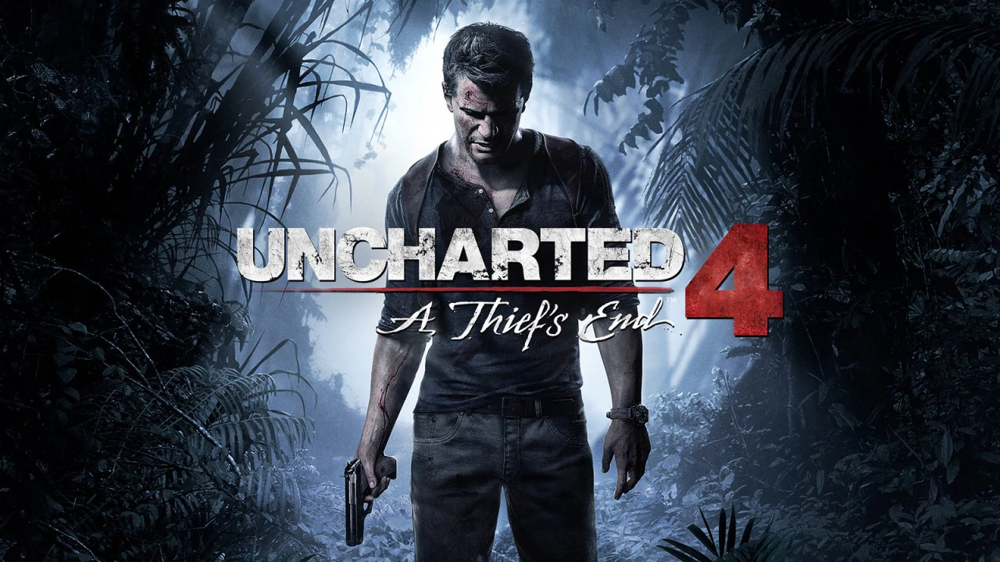

PLAYSTATION 4
 La PlayStation 4 (abbreviata con la sigla PS4) è una console per videogiochi creata dalla Sony Computer Entertainment, dotata di varie funzioni multimediali oltre a quelle di intrattenimento videoludico. Annunciata come successore della PlayStation 3 da Andrew House il 20 febbraio 2013 in Europa durante il PlayStation Meeting, tenutosi a Manhattan, New York, la console è disponibile dal 15 novembre del 2013 nel Nord America e dal 29 novembre del 2013 in Europa e Sud America, mentre in Giappone dal 22 febbraio del 2014 includendo la versione digitale del gioco Knack. Fa parte dell'ottava generazione di console, e compete commercialmente con Wii U di Nintendo e Xbox One di Microsoft.
Nella notte tra il 10 e l'11 giugno 2018, è stato presentato il design della console con varie fotografie, nelle quali si è potuto osservare che gli auricolari possono collegarsi direttamente al controller di gioco e non alla console, in modo da avere maggiore libertà di movimento.
La console è interattiva con molti servizi e può collegarsi con tutti i dispositivi attraverso la PlayStation App, progettata per migliorare il gameplay usando iOS e Android. PlayStation Now, basato sulla tecnologia cloud di Gaikai, permette di giocare ai titoli PlayStation sui vari apparecchi marchiati PlayStation e su altre piattaforme non necessariamente dedicate al gaming, come TV Bravia di Sony, tablet e smartphone e, Remote Play, che permette di usare la PlayStation Vita come schermo secondario.
Sony ha voluto fortemente collegare la console con i social, introducendo un nuovo tasto SHARE sul controller che consente di catturare immagini e video e successivamente si possono anche pubblicare su Facebook, su YouTube e su Twitch e i giocatori potranno essere trasmessi in streaming dal vivo. Una funzionalità che è chiamata Share Play consente agli utenti di invitare un amico alla sessione di gioco anche se quest'ultimo non possiede una copia del gioco che invece possiede l'altro giocatore.
La PlayStation 4 (abbreviata con la sigla PS4) è una console per videogiochi creata dalla Sony Computer Entertainment, dotata di varie funzioni multimediali oltre a quelle di intrattenimento videoludico. Annunciata come successore della PlayStation 3 da Andrew House il 20 febbraio 2013 in Europa durante il PlayStation Meeting, tenutosi a Manhattan, New York, la console è disponibile dal 15 novembre del 2013 nel Nord America e dal 29 novembre del 2013 in Europa e Sud America, mentre in Giappone dal 22 febbraio del 2014 includendo la versione digitale del gioco Knack. Fa parte dell'ottava generazione di console, e compete commercialmente con Wii U di Nintendo e Xbox One di Microsoft.
Nella notte tra il 10 e l'11 giugno 2018, è stato presentato il design della console con varie fotografie, nelle quali si è potuto osservare che gli auricolari possono collegarsi direttamente al controller di gioco e non alla console, in modo da avere maggiore libertà di movimento.
La console è interattiva con molti servizi e può collegarsi con tutti i dispositivi attraverso la PlayStation App, progettata per migliorare il gameplay usando iOS e Android. PlayStation Now, basato sulla tecnologia cloud di Gaikai, permette di giocare ai titoli PlayStation sui vari apparecchi marchiati PlayStation e su altre piattaforme non necessariamente dedicate al gaming, come TV Bravia di Sony, tablet e smartphone e, Remote Play, che permette di usare la PlayStation Vita come schermo secondario.
Sony ha voluto fortemente collegare la console con i social, introducendo un nuovo tasto SHARE sul controller che consente di catturare immagini e video e successivamente si possono anche pubblicare su Facebook, su YouTube e su Twitch e i giocatori potranno essere trasmessi in streaming dal vivo. Una funzionalità che è chiamata Share Play consente agli utenti di invitare un amico alla sessione di gioco anche se quest'ultimo non possiede una copia del gioco che invece possiede l'altro giocatore.

STORIA
Secondo l'architetto Mark Cerny, lo sviluppo della console è iniziato nel 2008. Meno di due anni prima, la PlayStation 3 fu messa sul mercato dopo mesi di ritardo a causa di alcuni problemi di produzione. Fu lanciata quasi un anno dopo dalla messa in vendita della Xbox 360 che già ebbe quasi 10 milioni di vendite. Il CEO di PlayStation Europa Jim Ryan volle evitare questo problema con la PS4. In fase di produzione Sony lavorò con lo sviluppatore di software Bungie, che offrÌ il loro contributo per sviluppare il controller. Nel 2012, Sony iniziò a spedire kit di sviluppo agli sviluppatori di giochi, costituito da un PC modificato con chipset AMD Accelerated Processing Unit. Questo kit di sviluppo era conosciuto come "Orbis".
Nei primi mesi del 2013, Sony annunciò che un evento conosciuto come "PlayStation Meeting" si sarebbe tenuto a Manhattan il 20 febbraio 2013. La notte tra il 20 e 21 febbraio, precisamente alle ore 0 (ora italiana), inizia, in diretta da Manhattan, il PlayStation Meeting seguito da migliaia di persone attraverso vari canali in streaming su Internet. Quella sera, come già si era presunto, viene annunciata la nuova console Sony, la PS4, e vengono mostrati vari video dei giochi di lancio della console, come il nuovo capitolo della serie Killzone ed Infamous: Second Son. Viene anche presentato ufficialmente il nuovo controller. Il 28 febbraio 2013, Sony rivela alcune foto dell'interfaccia utente della nuova console, nelle quali si notano caratteristiche presentate al PlayStation Meeting, come lo streaming dei gameplay, i trofei (presenti anche nella generazione precedente) e il Cross Play tra differenti dispositivi. Sony ufficializzò che la console sarebbe uscita il 15 novembre 2013 in America e il 29 novembre in Europa, il prezzo ufficiale è di 399 dollari nel Nord America, 349 sterline nel Regno Unito e 399 euro in Europa.
VENDITE
Sony concluse un accordo con il governo cinese a maggio 2014 per vendere i suoi prodotti in Cina, e la PS4 divenne il primo prodotto per essere venduto.
Il lancio negli Stati Uniti di PS4 fu clamoroso: oltre un milione di console furono vendute nel giro di 24 ore. Anche il lancio in Europa fu un successo: nel Regno Unito furono vendute, nell'immediato, 250 mila unità, facendo della PS4 la console più velocemente venduta nella storia del paese. Anche in Germania la console ebbe un'ottima accoglienza; in Italia la presentazione della console durante il day-one, fu effettuata a Castel Sant'Angelo, a Roma.
Il 22 febbraio 2014, con il lancio di PS4 in Giappone, Sony si portò in cima alle classifiche con la sua console (anche grazie al gioco Knack). Difatti, la prima spedizione di console venne esaurita in poco tempo.
Un mese prima dell'E3, Sony, nonostante il rilascio già avvenuto a Hong Kong il 17 dicembre, ha confermato di portare la PS4 anche nell'intero mercato cinese, riapertosi nel 2013, dopo la sua chiusura nel 2000. L'ultima console a sbarcare in Cina, dopo una riapertura solo parziale del mercato, fu proprio la PlayStation 2. Sempre durante maggio, Sony riconobbe inoltre che, nonostante le elevate vendite di PS4 (7 milioni di unità confermate), la propria situazione finanziaria rimaneva comunque in stato di "deficit", con perdite pari a 128.6 miliardi di yen, non a caso già ad aprile si erano verificati molti licenziamenti nell'azienda.
A metà giugno 2014, Sony ha dichiarato di aver problemi a rifornire l'Europa della sua nuova console, a causa dell'alta richiesta; problemi certamente non riscontrati negli Stati Uniti dove la PS4, per il quinto mese di fila, batteva Xbox One in fatto di vendite. Nelle prime settimane di luglio 2014, la PS4 era la console più venduta negli Stati Uniti, nonostante il taglio di prezzo effettuato su Xbox One.
Alla fine di luglio 2014, Sony ha dichiarato d'esser riuscita ad abbassare i costi di produzione della console, e che nel primo quadrimestre del 2014 ha venduto oltre 3,5 milioni di unità, riportando l'intera azienda in stato di profitto.
Il 4 marzo 2015, Sony annuncia di aver superato i 20 milioni di console vendute. Il traguardo è stato raggiunto in 1 anno e 4 mesi, superando quindi di due mesi la PlayStation 2. Il 20 marzo 2015, avviene il lancio della PS4 in Cina.
MODELLI
Nella giornata del 22 giugno 2015, Sony ufficializza due nuovi modelli di PS4: il primo, denominato Ultimate Player Edition, possiede un hard disk da 1 TB;Hard Disk; il secondo, codice CUH-1200, è stato revisionato esteticamente, con scocca interamente opaca e tasti fisici, oltre ad avere un consumo energetico ridotto dell'8% e un peso inferiore del 10%.
L'Ultimate Player Edition, chiesta a gran voce dai fan soprattutto dopo l'annuncio di Xbox One con HDD da 1 TB da parte di Microsoft, è uscita in Italia il 15 luglio 2015. È stata inoltre aggiornata la PlayStation App per iOS e Android per supportare il riscatto di codici PlayStation Network anche da mobile.
Il 10 giugno 2016, Sony ha confermato che una revisione hardware di PlayStation 4, con il nome in codice Neo, era in fase di sviluppo. La nuova revisione è un modello di console di fascia più alta destinata a supportare i giochi in 4K. Il nuovo modello sarà venduto insieme al modello esistente di PS4, e tutto il software esistente sarà compatibile tra i due modelli. La console di fascia alta è stato rivelata al pubblico al PlayStation Meeting del 7 settembre 2016 come PlayStation 4 Pro, affiancata dalla presentazione della PlayStation 4 Slim (il nome ufficiale rimane PlayStation 4), un modello più sottile della console standard PlayStation 4. Nel corso della conferenza, Sony ufficializzò che la PS4 Slim sarebbe uscita il 15 settembre 2016 al prezzo di 299 dollari nel Nord America, 249 sterline nel Regno Unito e 299 euro in Europa, mentre la PS4 Pro sarebbe uscita il 10 novembre 2016 al prezzo di 399 dollari nel Nord America, 349 sterline nel Regno Unito e 409 euro in Europa.
HOME PAGE PS1 PS2 PS3